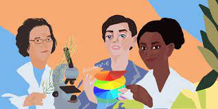

Mary Annig (1799-1847) una gran paleontologa nacida en Lyme Regis al suroeste de Inglaterra lugar que es considerado
una costa jurasica,era la mayor de 10 hijos solo ella y su hermano Joseph llegaron hasta la edad adulta, su padre
Richard vendia fosiles y cuando murio Mary tuvo que hacer lo mismo para llevar un sustento a su hogar,a los 12 años
Mary presento a la comunidad cientifica de Londres su primer Ictiosaurio, siguio con su busqueda y encontro el primer
Plesiosaurio y Pterosaurio completos, combirtiendose en una miembro no oficilial de la comunidad cientifica, estubo
en constante riesgo por su labor en 1833 casi muere a causa de un deslizamiento de tierra que mato a su perro Tray
Mary contribuyo a la creacion de la teoria evolutiva de Charles Darwin.
Maria Sklodowska (1867-1934) mas comocida como Marie Curie estuduio la fisica y la quimica en una universidad de
Paris donde conocio a Pierre Curie su esposo y colega con el cual estudio los rayos de uranio, crearon el electrometro
de hojas de oro que media la electronegatividad de las sustancias, asi encontraron dos elementos radiactivos: el Polonio
y el radio. En 1903 Marie fue la primera mujer en Europa en obtener un doctorado en ciencias y junto con su esposo ganaron
un premio nobel por su trabajo con la electronegatividad, al año siguiente iniciaron un estudio con radioterapia para el cancer.
Cuando el esposo de Marie murio le dieron el puesto de este en una universidad,en 1911 gano otro premio nobel en la quimica
fue directora de laboratorias de radionegatividad y durante la primera guerra mundial puso maquinas de rayos X en hospitales
y ambulancias. Esta gran mujer murio en 1934 a causa de tantos estudios con radiacion, hoy en dia los cuadernos de Marie deben
usar ropa especial para tocarlos debidoa a su gran carga de radiacion.